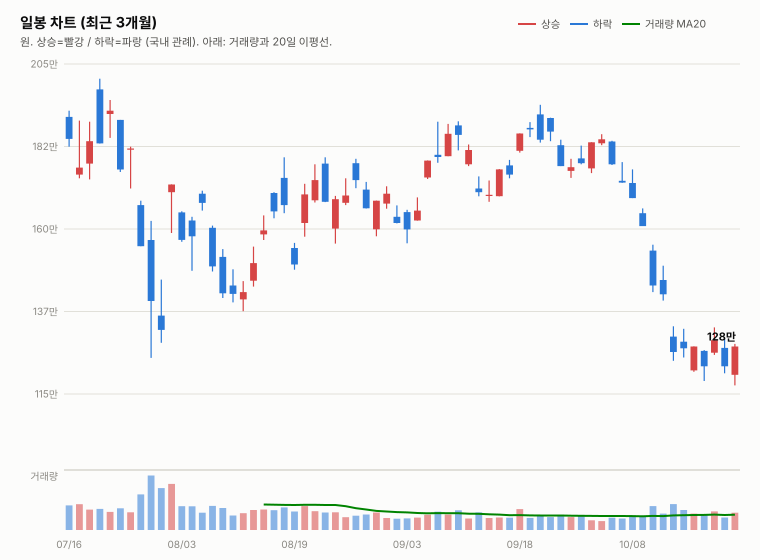
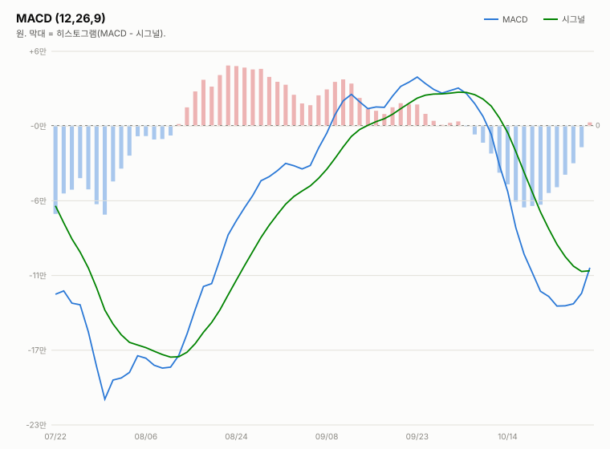
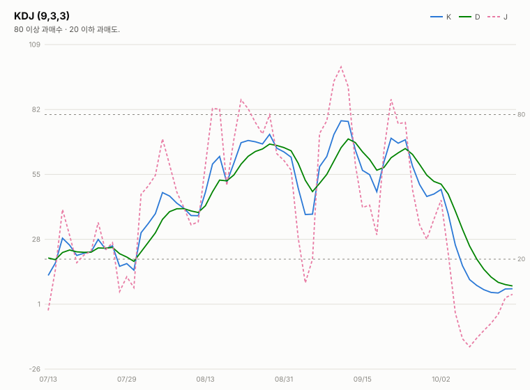
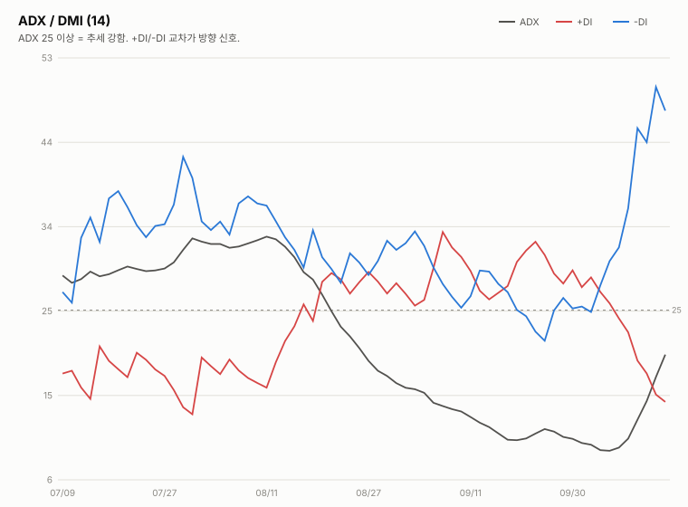
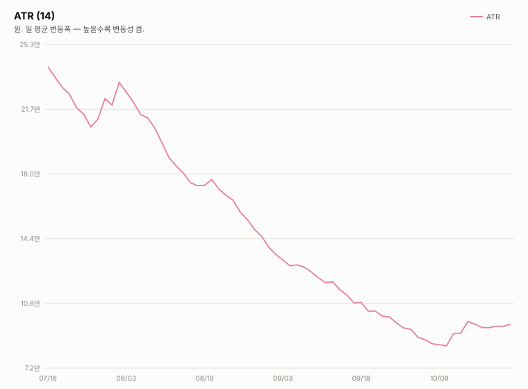

SK하이닉스 KRX 000660 · NASDAQ 상장(7/10)
작성 2026-10-22 09:48 KST · 장중 업데이트(현재가·OHLCV는 야후 quote.json 09:24 기준의 20분 지연 시세이며 개장 직후 누적 거래량입니다. 등락률은 10/21 확정 종가 기준) · 확정 판정은 10/21 종가 기준 중립이고 장중 판정은 잠정이며 종가에서만 변경합니다 · 본 자료는 정보 제공 목적이며 투자 권유가 아닙니다





10/21(수) SK하이닉스는 고가 132.9만원(+8.67%) 후 상승폭이 줄어 129.4만원(+5.81%)에 마감했습니다. 10/22(목)은 시가 127.3만원(-1.62% 갭다운)으로 출발했고 09:24 지연 시세 기준 저가 126.7만원(-2.09%)~고가 129.7만원(+0.23%) 사이에서 현재 128.0만원(-1.08%)입니다. 야간선물 -0.53%·미국 반도체 강세와 엇갈린 약보합 출발이며, 헤드라인은 외국인의 한 달째 순매도(16조원 규모로 보도)를 다루나 구체 내용과 오늘 수급은 확인 불가입니다. 개장 직후 누적 거래량이 평균의 0.12배라 방향 지속 여부는 단정하기 어렵습니다(방향성 참고일 뿐 가격 예측이 아닙니다).
종가 기준 지표 흐름은 DMI 격차 9/29 +1.6 → 9/30 +4.3 → 10/1 +2.2 → 10/2 +3.9 → 10/6 -0.8 → 10/7 -4.7 → 10/8 -7.9(종가 확정), KDJ 격차 9/29 -8.4 → 9/30 -8.9 → 10/1 -5.2 → 10/2 -2.2 → 10/6 -8.2 → 10/7 -14.1 → 10/8 -15.1(종가 확정)입니다. 10/8 값은 마감 리포트의 15:14 집계(-7.1·-14.4)에서 종가단일가 반영으로 갱신됐습니다. DMI 약세가 확대되고 KDJ는 과매도 구간(10/8 K 17.3 → 10/14 종가 K 7.3)에 있어 기술적 반등 여지는 있으나 추세 전환 신호는 없습니다. 10/12 값은 15:14 집계(DMI -13.9·KDJ -13.3, 종가단일가 미반영), 10/13 종가 확정 기준은 DMI -26.1·KDJ -10.9, 10/14 종가 확정 기준은 DMI -25.9·KDJ -8.4입니다.
| 전일 시세(확정) — 10/21 (수) 15:30 KST 마감 · 출처: 야후 quote.json(marketTime 15:30 KST 확정)·트레이딩뷰 KRX 피드 교차 확인(종가 1,294,000원 일치) · 등락률은 10/20 확정 종가 기준 · 거래량은 야후 최신 정정치(마감 리포트 3,976,449주) | |||||
|---|---|---|---|---|---|
| 시가 | 고가 | 저가 | 종가 | 등락 | 거래량 |
| ₩1,260,000 | ₩1,329,000 | ₩1,254,000 | ₩1,294,000 | +5.81% | 4,228,927주 |
| 오늘 시세(진행 중) — 10/22 (목) 09:24 지연 시세(확정 아님) · 출처: 야후 파이낸스 quote.json(20분 지연) · 등락률은 10/21 확정 종가 기준 | |||||
| 시가 | 고가 | 저가 | 현재가 | 등락 | 거래량 |
| ₩1,273,000 | ₩1,297,000 | ₩1,267,000 | ₩1,280,000 | -1.08% | 433,764주 |
10/22 09:24 지연 시세 1,280,000원은 전일(10/21) 확정 종가 1,294,000원 대비 -14,000원(-1.08%)입니다(확정 아님). 아래 기술지표는 야후 일봉(10/21 확정분)에 오늘 09:24 지연 시세를 반영한 장중 잠정치입니다. 참고로 10/21 거래량은 야후 일봉에서 정정이 반복되고 있습니다(397.6만 → 452.2만 → 422.9만주).
| 기술적 지표 — 10/22 09:24 지연 시세 포함 야후 일봉 기준(장중 잠정) · 2026-10-22 09:48 갱신 | ||
|---|---|---|
| 지표 | 값 | 해석 |
| MACD (12,26,9) | -13.24만 / 시그널 -8.93만 / 히스토그램 -4.32만 | 하락 모멘텀 지속(MACD가 시그널 아래·0선 아래) |
| ATR (14) | 9.05만 (7.1%) | 변동성 매우 큼 |
| ADX / DMI (14) | ADX 27.5 · +DI 16.1 · -DI 41.4 | 추세 강함 · -DI 우위 격차 -25.3(하락 우위 지속) |
| KDJ (9,3,3) | K 14.4 · D 11.2 · J 20.8 | 과매도 구간 · K>D 상승 우위 전환(격차 +3.2, 10/21 종가 +1.7) |
| 거래량 / 20일 이평 | 43.4만 주 / 평균 351.7만 주 | 20일 평균의 0.12배(장중 누적) |
KDJ는 과매도 구간에서 K>D(K 14.4·D 11.2, 격차 +3.2)를 유지하고 DMI 격차는 -25.3으로 10/21 종가(-26.0)보다 소폭 좁아졌지만, MACD는 시그널 아래(히스토그램 -4.32만)·-DI 우위입니다. 종가 기준 반전 신호는 아직 확인되지 않았습니다. 위 지표는 장중 잠정치(개장 직후 거래량)이며 종가에서 확정됩니다.
10/21 확정 종가(129.4만)와 오늘 장중(09:24 지연 시세 128.0만)을 기준으로 핵심 레벨과 관전 포인트를 정리합니다. 확정 판정은 종가 기준으로만 변경합니다.
| 오늘(10/22) 전망 | |
|---|---|
| 항목 | 내용 |
| 지지선 | 127.7만(10/19 종가) · 127.2만(10/16 종가) · 126.7만(오늘 저가·10/20 고가) · 126.0만(10/21 시가) · 125.4만(10/21 저가) · 122.3만(10/20 종가) |
| 저항선 | 129.0만(10/16 시가) · 129.4만(10/21 종가) · 129.7만(오늘 고가) · 132.5만(10/16 고가) · 132.9만(10/21 고가) · 133.2만(10/15 고가) |
| 예상 등락 레인지(참고용) | 10/21 종가 ± ATR 9.05만 = 120.4만 ~ 138.5만(참고용, 잠정 ATR) |
| 예정 이벤트 | 3Q26 실적 발표 10/27(10/22 기준 D-5) · 반도체대전(10/14 개막) 진행 중(종료일 확인 불가) · 간밤 해외 지표(SOX +1.97%·마이크론 +1.96%·ADR +2.48%·EWY +1.88%)와 코스피200 야간선물 -0.53% · 자사주 매입 종료 후 수급 공백 헤드라인(규모 확인 불가) · 솔리다임 상장 논란·외국인 지분율 50% 미만 급감 헤드라인(수치 확인 불가) · 정부와 소부장 협력사 2조 금융 지원 보도(세부 확인 불가) · 삼성·SK하이닉스 중국 공장 낸드 공정 고도화 로이터 보도(영향 확인 불가) · 원/달러 1,326.10원(-0.04%) |
| 관찰 포인트 | 127.7만(10/19 종가)·126.7만(오늘 저가) 지지 여부, 129.0만~129.7만 회복 여부, 거래량 동반 여부(현재 평균의 0.12배, 개장 직후), 외국인 순매도 지속 여부(헤드라인 외 확인 불가), 야간선물 -0.53% 대비 현물 방향, 종가 기준 DMI·MACD 변화(MACD 시그널 상회 여부) |
| 상방 시나리오 | 미국 반도체·ADR 강세가 뒤늦게 반영돼 129.0만~129.7만을 회복하면 132.5만~133.2만 저항대 재도전이 가능하고 KDJ는 K>D(격차 +3.2)를 유지 중임. 다만 ①의 종가 기준 개선(DMI 재역전·MACD 시그널 상회)이 확인돼야 하며, 매수 복귀에는 긍정 3개 이상·부정 0개가 필요(현재 긍정 2·부정 1·③ 중립) |
| 하방 시나리오 | 외국인 순매도 지속 헤드라인과 자사주 매입 종료 우려가 이어져 127.7만·126.7만을 이탈하면 126.0만~125.4만 갭 영역 재시험 가능성이 있음(ATR 7.1%). 매도 진입(부정 3개 이상·긍정 0개)은 ②④가 모두 긍정에서 이탈해야 해 현재는 해당 없음 |
| 야간선물 | 888.3(코스피200 야간선물, 주간 종가 893.05 대비 -0.53%·updateTimeKST 10-22 06:00·20분 지연; 야간 세션 값인지 첫 실측 검증 진행 중) |
해석 — 야간선물 -0.53%와 미국 반도체·ADR 강세가 엇갈린 가운데 시가 127.3만(-1.62% 갭다운)으로 출발해 09:24 지연 시세 128.0만(-1.08%)입니다. 개장 직후 거래량이 낮아(평균의 0.12배) 하락·회복 어느 쪽도 단정하기 어렵고, 헤드라인상 외국인 순매도 부담이 거론됩니다(구체 내용 확인 불가, 방향성 참고일 뿐 가격 예측이 아닙니다).
※ 구글 뉴스에서 'SK하이닉스' 최신 기사를 자동 수집해 날짜순으로 표시합니다. 신호등(🟢 호재 / 🔴 악재 / ⚪ 중립)은 제목 키워드 기반 자동 분류로 참고용입니다. 웹 페이지에서는 실시간 갱신됩니다.
2Q26 확정 실적: 매출 79.3조·영업이익 60.5조·영업이익률 76%로 분기 역대 최대입니다. 전분기 대비 매출 +50.9%·영업이익 +61.0%, 전년 동기 대비 매출 +256.8%·영업이익 +557.2%로 AI 메모리 슈퍼사이클을 반영하며, 이익률은 1Q 72%에서 76%로 4%p 개선됐습니다.
3분기 컨센서스(10/8 갱신): 에프앤가이드 10/8 기준 3Q26 컨센서스는 매출 98.4조·영업이익 77.1조(영업이익률 78.3%)로, 9/4 기준(매출 100.3조·영업이익 78.7조)과 9/30 집계(영업이익 78.1조)에서 소폭 하향됐습니다. 메리츠증권은 원화 강세와 상반기 대비 개선 속도 둔화로 시장 컨센서스가 74조원까지 내려갔다고 분석했습니다(헤드라인 기준). 증권사별로는 메리츠 80.1조, SK증권 79조, IBK 75.1조, DS투자 70조 등으로 70조원대 초반~80조원 초반에 흩어져 있어 추정 편차가 큽니다(조선비즈·뉴스핌 등 헤드라인 기준, 본문 수치는 별도 검증하지 않음). 3Q26 실적 발표는 10/27(D-14)로 예정돼 있습니다.
산업 동향 갱신일: 2026-10-14(10/16 재조사에서 신규 가격 전망·점유율 발표를 확인하지 못해 수치는 10/14 조사분 유지; 직전 확인: 2026-10-14). 아래 수치는 TrendForce 9/30 발표·산업통상부 10/1 발표·국내 언론 보도 기준이며, 차트의 점유율은 카운터포인트 1Q26(매출 기준)·트렌드포스 연간 전망입니다. 2Q26 이후 확정 점유율은 확인하지 못했습니다.
HBM / DRAM
NAND
해석 — 가격 상승률은 전분기 대비 둔화(D램 +13~18% → +10~15%, 낸드 +18~23% → +15~20%)했지만 방향은 여전히 상승이고 HBM은 2027년 가격 인상 협상이 진행 중이라 요소 ④ 산업 사이클은 긍정 유지입니다. 다만 상승률 둔화와 CXMT의 범용 D램 추격은 업황 고점 논쟁을 키울 수 있어 후속 지표(10월 수출, 4Q 계약가 실측, HBM4 협상 결과)를 계속 점검합니다.
밸류에이션 갱신일: 2026-10-14(10/16 재조사에서도 신규·변경 목표주가 보도를 확인하지 못해 6곳을 유지(직전 확인 2026-10-14). 직전 컨센서스 322만원은 9/3 한국경제 기준). 차트에는 보도일 기준 최근 1개월(9/16~10/16) 이내 목표가를 낸 6곳만 표시하며, 평균 목표가도 이 6곳의 단순 평균(352.3만원)입니다. 1개월을 넘긴 리포트(예: 한국투자증권 470만원 7/30, KB증권 420만원 7/30 유지, 교보증권 400만원 7/9 등)는 평균에서도 제외했습니다. 참고로 뉴스핌 로보뉴스(SK증권 리포트 브리핑, 10/12)가 집계한 최근 6개월 전체 증권사 평균 목표가는 3,232,083원이며, 집계 기간·방식에 따라 다른 평균(예: 연합인포맥스 약 268만원, 약 4개월 전 기사)이 보도될 수 있습니다.
최근 1개월 이내 6곳의 평균 목표주가 352.3만 원은 09:24 지연 시세 128.0만 대비 +175.3% 괴리입니다(10/21 종가 129.4만 기준 +172.3%). 6곳은 헤드라인 기준 SK증권 400만원 유지(뉴스핌, 10/12)·IBK증권 400만원 유지(10/7)·유진투자증권 370만원(뉴스핌, 10/8)·하나증권 360만원 "컨센서스 부합"(뉴스핌, 10/13)·메리츠증권 320만원 상향(조선비즈·매일경제, 10/12)·DS투자증권 264만원(9/29 원화 강세를 이유로 하향)입니다. 표본이 6곳으로 적고 하향·상향 리포트가 섞여 있어 평균은 참고용입니다(6개월 전체 평균 323.2만원 대비 괴리율은 09:24 지연 시세 기준 +152.5%). 목표주가 괴리는 확대된 상태에서 주가는 종가 기준 2거래일 연속 상승한 뒤 10/20 -4.23% 하락 마감했으나 10/21 +5.81% 반등 마감한 뒤 오늘 장 초반 -1.08%로 일부 되돌리고 있습니다. 참고로 중앙일보(10/20)에 노무라 "하이닉스 470만" 헤드라인이 있으나 9/4 보고서에서 유지된 목표가로 보이며(이번 기사 본문 확인 불가) 최근 1개월 평균에는 반영하지 않았습니다.
| 투자 포인트 (Bull) | 리스크 요인 (Bear) |
|---|---|
| 목표가 평균(최근 1개월 6곳) 괴리 +175.3%, 메리츠 3Q 영업익 80조 전망·목표가 320만원 상향, 유진 370만·IBK 400만 등 목표주가 유지 보도 | 종가 기준 7거래일 연속 하락(10/2 대비 -31.5%)·10/15 종가 -11.06%·10/13 종가 -10.09%(장중 -10%대 급락·매도 사이드카), DMI -DI 우위·MACD 시그널 하회, 외국인 매도 |
| 메모리 재고 10일 미만, 내년 사상 초유 공급부족 전망, 최대 실적 예고 보도 | ADX 12.7로 추세 강도 약함, ADR 락업 해제 임박·38% 프리미엄 매물 우려, 솔리다임 상장 관련 주주가치 훼손 논란 |
| HBM4 공급가 급등 확정, KDJ 과매도 구간(기술적 반등 여지) | ATR 6.3%로 변동성 매우 큼, 10/12 미국장 SOX -2.67%·마이크론 -3.88% 약세, 야간선물 -2.05%, 집단 산재 신청 등 ESG 이슈 |
| 솔리다임 IPO 추진(가치 재평가 기대)·로봇용 D램 수요 전망(2030년 20배) | 호재성 보도에도 갭다운·종가 -10.09%(호재 둔감), 헤드라인 기준 중국발 기술 추격 우려 |
| 요소 | 방향 | 근거 |
|---|---|---|
| ① 추세/모멘텀 | 부정(완화 조짐) | 10/21 +5.81% 반등 마감 후 오늘 09:24 지연 시세 -1.08%(시가 갭다운 -1.62%)로 상승분 일부를 반납 중입니다. KDJ는 K>D(격차 +3.2)·DMI 격차는 -25.3으로 좁아졌으나 MACD 시그널 하회(히스토그램 -4.32만)·-DI 우위로 종가 기준 반전 신호는 미확인(10/2 종가 대비 -30.5%) |
| ② 밸류에이션 갭 | 상승여력 | 최근 1개월 6곳 평균 목표가 352.3만원 대비 09:24 지연 시세 128.0만원 — 괴리율 +175.3%(10/21 종가 129.4만원 기준 +172.3%) |
| ③ 촉매 | 중립(장중 잠정) | 확정 판정 시점(10/21 종가) 중립(확정)이었고 장중 잠정 판정에서도 중립으로 봅니다. 09:48 Top10(같은 내용 기사는 1건으로 묶은 뒤) 자동분류는 🟢 호재 0건·🔴 악재 2건(연합인포맥스 "[솔리다임 논란①] SK하이닉스 던지는 외국인…한 달째 16조 줄매도"·서울신문 "거래대금 1·2위는 SK하이닉스·삼성전자… 삼성SDI 2.53% 하락"; 후자는 거래대금 순위 시황 기사)·⚪ 중립 8건입니다. 외국인 순매도 지속과 자사주 매입 종료 후 수급 우려가 있는 반면 소부장 협력사 2조 금융 지원, iHBM 공급망 협의, 중국 공장 낸드 공정 고도화 같은 사업 소식도 있어 혼조로 봅니다. ③을 부정으로 내려도 중립→매도 조건(부정 3개 이상·긍정 0개)은 충족되지 않아 판정은 같습니다(모두 헤드라인만 확인, 순매도 세부 내용은 확인 불가). |
| ④ 산업 사이클 | 개선 | HBM4 공급가 급등 확정·메모리 재고 부족 구조 유지, 3Q26 이익 전망 상향 흐름 지속(메리츠 80조 전망 보도) |